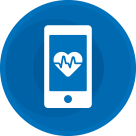
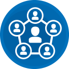
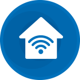
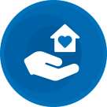

-
Mobiler Gesundheits-
Check
Mobile Health Check
-
Persönliche Anbindung an
das Soziale Netzwerk
Personal Connected Network
-
Intelligente häusliche
Unterstützung
Smart Home Care
-
Telemedizinischer
Service
Telemedical Service
Bald ist es soweit!
Dann stellen wir Ihnen unser neues innovatives Produkt vor.
Seien Sie gespannt, welchen Impuls wir im Zukunftsbereich Digital Health setzen. Entdecken Sie mit uns die neuen Möglichkeiten.
Lernen Sie uns auch persönlich auf den kommenden Technologie-Messen kennen. Denn dort werden wir unsere Lösungen life präsentieren. Unsere Premiere findet natürlich auf der CeBit in Hannover statt; schließlich ist Hannover unserem jungen Unternehmen die Heimatstadt. Auf der CeBit können Sie uns vom 12. bis 15. Juni 2018 besuchen und auch danach gibt es noch viele Gelegenheiten unsere Innovationen selbst zu erleben.
San Francisco, USA auf der WT (11. bis 12. Juli), im November auf der weltgrößten Medizinprodukte Messe MEDICA und Anfang nächsten Jahres auf der CES in Las Vegas, USA.
Wenn Sie nicht so lange abwarten wollen, laden wir Sie ein, auf unserer Website mehr über uns und unsere Ideen zu erfahren. Dort finden Sie auf unserem Blog weitere interessante Informationen.
-

Hannover - Germany
11. bis 15. Juni 2018
Hall 27, Stand C37/4 -
San Francisco - USA
11. bis 12. Juli 2018 -
Düsseldorf - Germany
12. bis 15. November 2018 -
Las Vegas - USA
8. bis 11. Januar 2019
CeBit Hannover
11. bis 15. Juni 2018
Wir heißen Sie willkommen, auf der internationalen Technologieausstellung CeBit 2018 in Hannover.
Wir sind stolz darauf unser innovatives Produkt endlich präsentieren zu können. Ideenreichtum, Begeisterung, ein Herz für Details und harte Arbeit in unserem großartigen Team haben das Projekt erfolgreich gemacht. Damit ist corbit gleich zu Beginn mit Spitzentechnologie präsent und kann jetzt auch die folgenden Projekte im Bereich Digital Health zum Erfolg führen.
Seien Sie sicher, ein Besuch lohnt sich! Lernen Sie uns persönlich kennen. Erfahren Sie was unser Produkt einzigartig macht und wie wir uns die Zukunft vorstellen. Gesundheit, Technik, Know-how. Wenn Technik, dann mit Herz!
WT Wearable Technologies San Francisco
11. bis 12. Juli 2018
Das Silicon Valley in San Francisco gilt als einer der aufregendsten Standorte der High-Tech-Industrie weltweit und ist Heimat vieler bekannter Technologieunternehmen. Hier entstehen die neuesten technologischen Innovationen.
Die Option, Technologie am Körper zu tragen (Wearables), ist gerade für die Gesundheit des Einzelnen ein Fortschritt und ermöglicht uns, medizinische Produkte in den Alltag einzubinden.
Wearable Technologies WT ist die weltweit führende Innovations- und Marktentwicklungsplattform für körpernah, am Körper oder sogar im Körper getragene Technologien, sogenannte Wearables.
Tragbare Technologie für Ihre Gesundheit ist uns ein Herzensanliegen. Deshalb werden wir auch auf der WT in San Francisco unsere Innovation vorstellen.
MEDICA Düsseldorf
12. bis 15. November 2018
Für unsere neueste Innovation im Bereich Telemedizin wählen wir selbstverständlich die MEDICA in Düsseldorf für unsere Präsentation. Sie ist die weltgrößte Messe in der Gesundheitsbranche und begeistert die Fachwelt mit Errungenschaften und Lösungen der Medizin.
Kommen Sie uns auf der MEDICA besuchen und erfahren Sie mehr über unser Produkt und die Möglichkeiten von eHealth. Fachbesucher finden uns in Halle 15.
Ärzte und medizinisches Fachpersonal haben selbstverständlich auch Zugang zur MEDICA-Ausstellung, denn gleichzeitig zur EXPO finden immer die MEDICA ACADEMY und andere Gesundheitskonferenzen statt. Seien Sie mit corbit am Puls der Zeit.
Consumer Electronics Show (CES) Las Vegas
8. bis 11. Januar 2019
Wir sind stolz darauf, unsere innovative Spitzentechnologie auch auf der Consumer Electronics Show (kurz CES) in Las Vegas zu präsentieren. Die CES ist die weltweit beliebteste Fachmesse für Unterhaltungselektronik. Sie ist ein Treffpunkt für die Experten der Branche, die ihre neuesten und innovativsten Erfindungen und Produkte präsentieren.
Seit ihrer ersten Ausgabe im Jahr 1967 ist die CES eine Veranstaltung, die die Trends der Elektronikindustrie und den täglichen Einsatz von Hightech-Geräten prägt. Die Consumer Electronics Show findet in einem der beliebtesten Ausstellungsorte der Vereinigten Staaten statt - dem Las Vegas Convention Center.